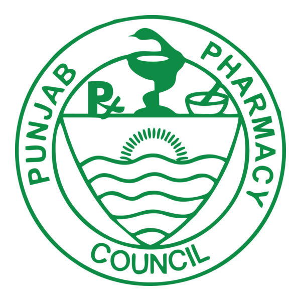
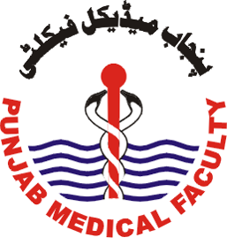
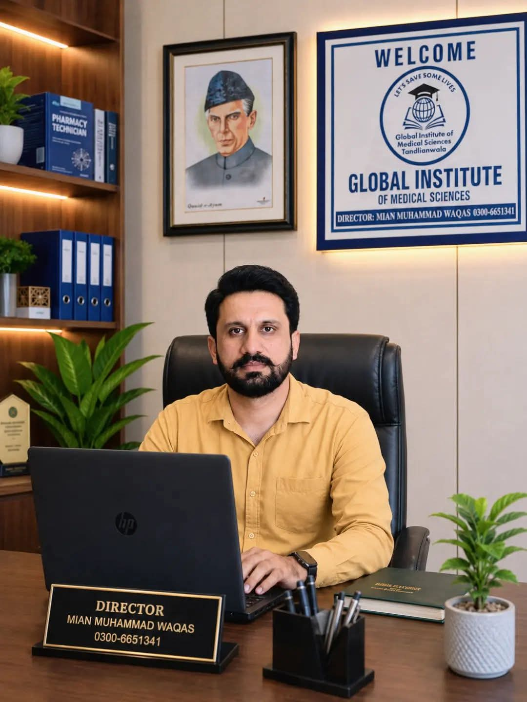

GLOBAL INSTITUTE OF MEDICAL SCIENCES & COMPUTER COLLEGE • TANDLIANWALA
• ADMISSIONS OPEN • GLOBAL INSTITUTE OF MEDICAL SCIENCES &
COMPUTER COLLEGE • TANDLIANWALA • ADMISSIONS OPEN 2026-2028 •
Global Institute of Medical Sciences provides quality education and practical training for nurses, midwives, lab technicians, pharmacy staff, and computer professionals through qualified faculty, modern learning facilities, and a strong commitment to 100% result success record.



"Education and hands-on hospital training, together — that is how we prepare our students for a real career in health care."
To provide affordable, council-approved medical and computer education to the students of Tandlianwala and nearby areas, backed by qualified doctors and hospital-based practical training.
To be the region's most trusted name in health-sciences and IT education, sending well-trained nurses, midwives, technicians and computer professionals into the workforce.
A strong, consistent record of student success in council examinations.
Practical training and clinical exposure alongside classroom study.
Qualified doctors and experienced para-medical staff teaching every program.
Concessional fee packages, plus free coaching classes for matric-passed students.
Three council-approved medical streams built around real hospital practice, plus practical computer & IT courses open to any Matric background.
Certified Nursing Assistant, Community Midwife and Lady Health Visitor — approved by the Pakistan Nursing & Midwifery Council and Punjab Medical Faculty.
Approved by the Punjab Pharmacy Council, Lahore — a direct route to your own medical store.
X-Ray, Medical Lab and Operation Theatre Technician diplomas, approved by the Punjab Medical Faculty.
Short-course computer training open to any Matric background — no science subjects required.
Start your application now — the form checks your eligibility instantly and sends your details straight to our admissions team.
Apply for Admission